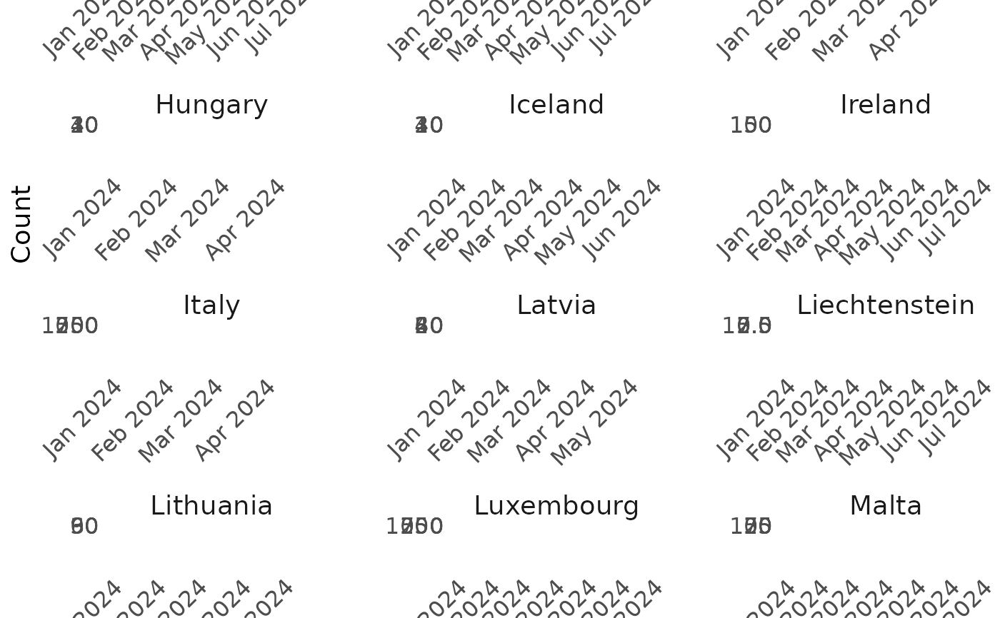

Plot ERVISS non-sentinel tests/detections data
Source:R/erviss_nonsentinel_tests.R
plot_nonsentinel_tests.RdCreates a ggplot2 visualization of non-sentinel tests/detections data, with facets by country and colored by pathogen.
Arguments
- data
A data.table or data.frame containing non-sentinel tests data, typically output from
get_nonsentinel_tests. Must contain columns: date, value, pathogen, countryname.- date_breaks
A string specifying the date breaks for the x-axis (e.g., "1 month", "2 weeks")
- date_format
A string specifying the date format for x-axis labels (e.g.,
"%b %Y"for "Jan 2024")
Examples
# \donttest{
data <- get_nonsentinel_tests(
date_min = as.Date("2024-01-01"),
date_max = as.Date("2024-06-30"),
pathogen = "Influenza",
indicator = "detections"
)
plot_nonsentinel_tests(data, date_breaks = "1 month")

# }